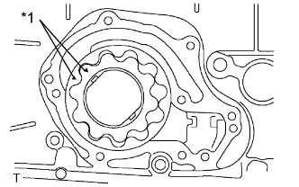
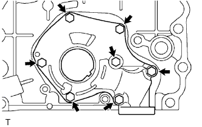

МАСЛЯНЫЙ НАСОС > ПОВТОРНАЯ СБОРКА |
| 1. УСТАНОВИТЕ КОМПЛЕКТ ШЕСТЕРЕН МАСЛЯНОГО НАСОСА |
|  |
Смажьте шестерни масляного насоса моторным маслом и поместите их в корпус масляного насоса так, чтобы метки были направлены наружу (к крышке масляного насоса). Шестерни должны вращаться плавно.
| *1 | Метка совмещения |
| 2. УСТАНОВИТЕ КРЫШКУ МАСЛЯНОГО НАСОСА |
|  |
Установите крышку масляного насоса и закрепите ее 7 болтами.
| 3. УСТАНОВИТЕ ПЕРЕПУСКНОЙ КЛАПАН МАСЛЯНОГО НАСОСА |
 |
Смажьте перепускной клапан моторным маслом.
Вставьте перепускной клапан и пружину в отверстие корпуса насоса.
Установите новую прокладку на пробку.
Заверните пробку с помощью торцевого ключа на 27 мм.